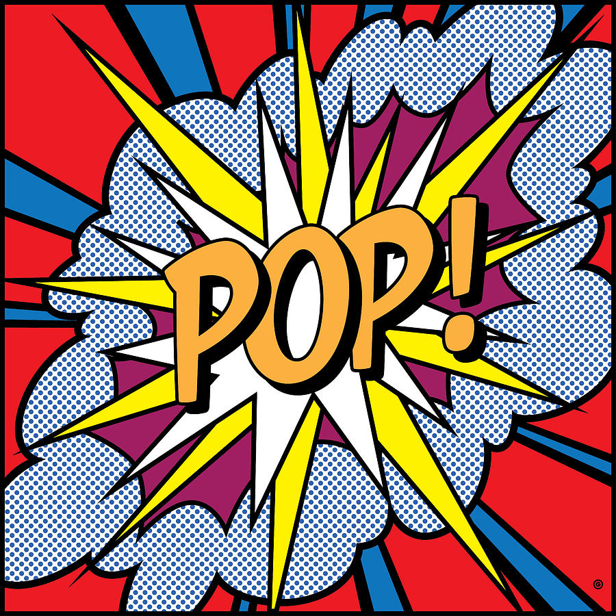
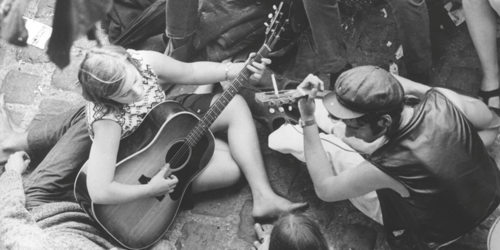

BeatFlow è un'azienda giovane e innovativa con sede a Bologna, fondata nel corrente anno. Ci impegniamo nel fornire agli appassionati di musica pop la possibilità di ascoltare e commentare le migliori hit del momento.
Presso BeatFlow, crediamo che la musica sia una forma d'arte che unisce le persone e suscita emozioni. La nostra piattaforma è progettata per offrire un'esperienza coinvolgente e interattiva per gli amanti della musica pop.
Siamo appassionati e dedicati nel portare la gioia della musica alle persone di tutto il mondo. Con il nostro team di esperti e l'uso delle più recenti tecnologie, vogliamo creare un ambiente in cui la musica possa fluire liberamente e ispirare tutti coloro che ci seguono.